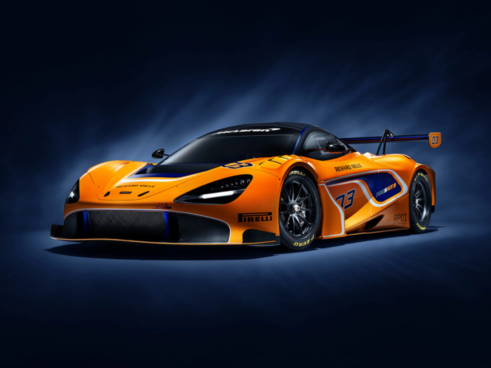

Historia de McLaren
McLaren es una de las marcas más icónicas del automovilismo y de la ingeniería automotriz mundial. Fue fundada en 1963 por el piloto neozelandés Bruce McLaren, con el objetivo de competir en la Fórmula 1. Desde sus inicios, la escudería destacó por su enfoque innovador y su ambición por ganar, lo que la llevó a convertirse en una de las escuderías más exitosas en la historia de la Fórmula 1.
El equipo debutó oficialmente en la F1 en 1966. Tras la trágica muerte de Bruce en 1970 durante unas pruebas, el equipo siguió adelante bajo la dirección de Teddy Mayer y luego Ron Dennis, quien lo transformó en un referente tecnológico y competitivo durante las décadas de los 80 y 90.
McLaren es una empresa británica fundada por Bruce McLaren en 1963...
Automovilismo (McLaren F1)
McLaren F1 ha sido sinónimo de competitividad y gloria...
- Utiliza materiales como la fibra de carbono...
- Su sede, el McLaren Technology Centre en Woking...
- En 2024, McLaren logró recuperar el Campeonato...
- La gestión de paradas en pits, estrategias...
Automóviles deportivos (McLaren Automotive)
McLaren Automotive no se queda atrás...
- El McLaren F1 sigue siendo uno de los autos más valorados...
- El P1 fue su primer híbrido...
- La fibra de carbono es la base...
- Modelos como el Senna, Speedtail y 765LT...
Logros en las Carreras
- 8 Campeonatos de Constructores de F1.
- 12 Campeonatos de Pilotos con leyendas como Ayrton Senna, Alain Prost, Niki Lauda, Emerson Fittipaldi, James Hunt, y Lewis Hamilton.
- Más de 180 victorias en Grandes Premios.
- McLaren también ha competido con éxito en otras categorías, como la IndyCar, donde ganó las 500 Millas de Indianápolis con Johnny Rutherford.
- En la 24 Horas de Le Mans, McLaren logró una victoria histórica en 1995 con el McLaren F1 GTR en su primera participación.
Motores de McLaren
McLaren no siempre ha fabricado sus propios motores, pero ha colaborado con fabricantes legendarios:
- Ford y Cosworth en los años 60 y 70.
- TAG-Porsche en los años 80.
- Honda en dos épocas: los 80 (con Senna y Prost) y brevemente entre 2015 y 2017.
- Mercedes-Benz, uno de sus socios más exitosos, especialmente en los años 2000, incluyendo el título de pilotos en 2008 con Lewis Hamilton.
- Actualmente, McLaren sigue usando motores Mercedes en la F1, mientras que sus autos de calle utilizan motores V8 y V6 biturbo desarrollados en conjunto con Ricardo Engineering.
Sonido del motor McLaren
McLaren representa algo más que autos rápidos. Es sinónimo de innovación, pasión por la velocidad y excelencia en ingeniería. Su legado sigue inspirando a generaciones dentro y fuera de la pista.